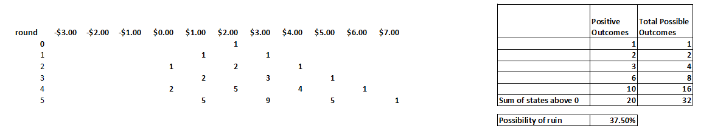

Up Side Down
Home
Challenge: The game is coin toss and the bet is 1 dollar. I have initially n dollars and committed to play m rounds. What are my chances of ruin?
Using pascal’s triangle, I can calculate the probabilities, but it is a cumbersome and messy process.
Here how it looks for n=2 and m = 5.
For precise calculation one can use the following
python code.

You can create a simulation with the script below (the initial parameters are set as in the example above).the simulation is based on the javascript random function. You can change every parameter of the simulation and please not that if you run too many rounds with a lot of individuals it might get slow.
Initial amouint of money:
Win:
Los:
Probability of winning:
How many individuals are playing:
How many rounds are being played:
Calculate